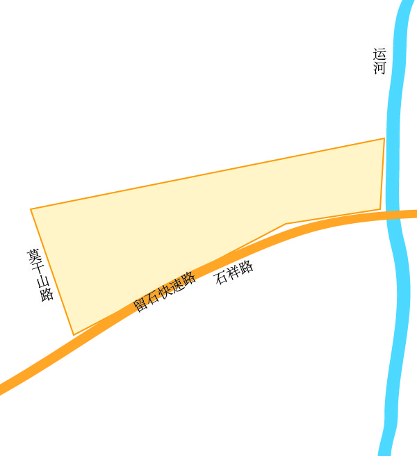

<!DOCTYPE html>
<html lang="en">
<head>
    <meta charset="UTF-8">
    <meta name="viewport" content="width=device-width, initial-scale=1.0, user-scaleble=no">
    <meta http-equiv="X-UA-Compatible" content="ie=edge">
    <style>
    html,body{ width: 100%; height: 100%; overflow: hidden; margin: 0; padding: 0; }
    #map{ width: 100%; height: 100%; }
    .box img{ width: 100%;}
    </style>
    <title>百度地图infoWindow加载图片</title>
</head>
<body>
    <div id="map"></div>
    <script type="text/javascript" src="//api.map.baidu.com/api?v=3.0&ak=R0lg8GyKHQI6hUGCuS3OGGVNN3tWVAtN"></script>
    <script>    
        var map = new BMap.Map("map");
        var point = new BMap.Point(120.155153,30.347163);
        //设置视角中心点
        map.centerAndZoom(point, 14);
        //启用滚轮放大缩小
        map.enableScrollWheelZoom();

        var marker = new BMap.Marker(point);
        var html = "<div class='box'></div>";
        var opt = {
            width: 400,
            height: 0,
            title: "信息标题",
        }
        var infoWindow = new BMap.InfoWindow(html,opt);
        marker.addEventListener("click",function(){
            marker.openInfoWindow(infoWindow);
        })
        function imgLoad(){
            infoWindow.redraw();
        }
        map.addOverlay(marker);
    </script>
</body>
</html>